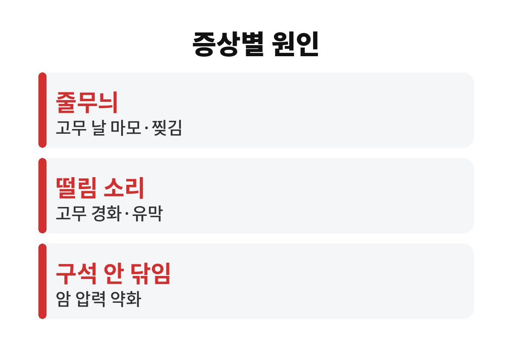
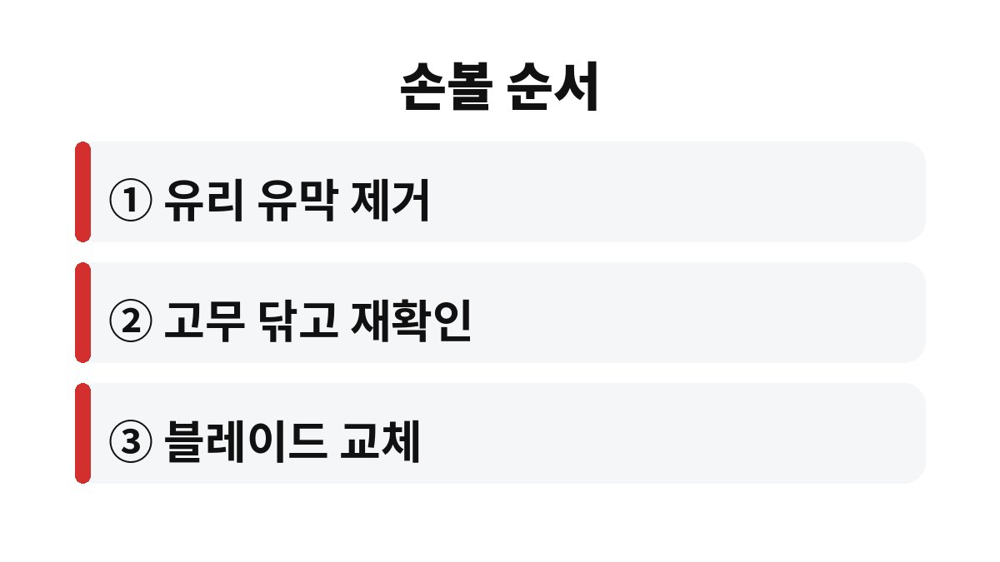

와이퍼 교체 시기는 사용 기간보다 닦인 자국으로 판단하는 편이 정확하다.
줄무늬가 남거나 블레이드가 떨리며 '드드득' 소리가 나면 고무가 굳었거나 유리에 막이 생겼다는 뜻이다.
겨울에는 고무가 더 빨리 굳고 결빙까지 겹쳐 이런 증상이 한꺼번에 나타난다.
낮에는 멀쩡해 보이던 앞유리가 비 오는 밤에 마주 오는 차 불빛을 받으면 번져 보인다.
와이퍼가 지나간 자리에 얇은 물막이나 가는 선이 남아 빛이 퍼지기 때문이다.
이 상태로 고속도로를 달리면 차선이 흐려져 속도를 줄일 수밖에 없다.
증상은 대개 세 가지로 나뉜다.
가는 줄이 반복해서 남는 경우, 블레이드가 튀듯 떨리는 경우, 한쪽 구석이 아예 닦이지 않는 경우다.
소리만 나고 닦임은 괜찮은 경우도 있다.
반대로 소리는 조용한데 시야가 뿌옇게 남는 경우가 더 위험하다.
운전 중에는 익숙해져서 잘 모르기 때문에 정차했을 때 유리를 정면으로 보고 자국을 확인한다.
와이퍼 고무는 햇빛과 열, 추위를 반복해서 겪으면 탄성을 잃는다.
굳은 고무는 유리 곡면을 따라 눕지 못하고 튀어 오르며 떨림을 만든다.
고무 끝이 찢어지거나 이가 빠지면 그 자리만 물이 남아 줄무늬가 된다.
새 블레이드로 바꿔도 소리가 그대로라면 유리 쪽을 의심한다.
기름 성분이 섞인 먼지와 배기가스가 얇은 막을 만들면 고무가 미끄러지지 못하고 걸린다.
이때는 블레이드보다 유막 제거가 먼저다.
와이퍼 암 스프링이 약해지면 유리를 누르는 힘이 고르지 않아 한쪽 구석이 비어 보인다.
겨울 아침 얼어붙은 블레이드를 그대로 작동시키면 고무가 뜯기기도 한다.
세차장에서 왁스나 발수 코팅을 자주 하면 유막과 비슷하게 블레이드가 걸리기도 한다.
코팅 직후 떨림이 생겼다면 고무 탓으로 단정하지 말고 며칠 지켜본다.
아래 표는 증상을 보고 무엇부터 손볼지 고르는 기준이다.
교체 주기는 차종과 블레이드 종류마다 달라 차량 설명서 권장 주기를 함께 본다.
| 보이는 증상 | 의심할 원인 | 먼저 할 일 |
|---|---|---|
| 가는 줄이 일정하게 남음 | 고무 날 마모·찢김 | 블레이드 교체 |
| 떨리며 드드득 소리 | 고무 경화 또는 유막 | 유리 세정 후 다시 확인 |
| 한쪽 끝이 안 닦임 | 암 압력 약화·블레이드 휨 | 정비소에서 암 점검 |
| 고무가 하얗게 갈라짐 | 자외선·추위로 인한 노화 | 블레이드 교체 |

표대로 해도 애매한 경우가 있다.
줄무늬가 아주 옅고 비가 적게 올 때만 보인다면 워셔액을 뿌려 닦아 본 뒤 판단해도 늦지 않다.
교체 주기를 개월 수로만 정해 두면 비가 적은 해에는 멀쩡한 블레이드를 버리게 된다.
반대로 장마와 눈을 연달아 겪은 해에는 권장 주기보다 일찍 닳는다.
그래서 나는 개월 수보다 비 오는 날 시야를 기준으로 삼는 편이 낫다고 본다.
블레이드 값을 아끼려고 고무만 따로 갈아 끼우는 방법도 있다.
프레임이 멀쩡하면 비용이 줄지만, 프레임이 휘었거나 녹이 슬었다면 고무만 바꿔도 떨림이 남는다.
이럴 때는 통째로 바꾸는 편이 결국 덜 번거롭다.
블레이드는 일반형, 플랫형, 하이브리드형처럼 모양이 다르고 차종마다 연결 방식도 다르다.
같은 길이라도 고정 방식이 맞지 않으면 끼워지지 않는다.
구입 전에 기존 블레이드를 떼어 연결부 모양을 사진으로 남겨 두면 헷갈리지 않는다.

뒷유리 와이퍼는 자주 쓰지 않아 잊기 쉽다.
앞 블레이드를 바꿀 때 뒤쪽 고무 상태도 같이 본다.
밤새 서리가 내린 날 아침에 와이퍼부터 켜면 언 고무 날이 유리에 붙은 채로 끌려간다.
이렇게 한 번 뜯긴 날은 바로 줄무늬를 만든다.
히터를 앞유리 쪽으로 틀어 성에를 충분히 녹이고, 블레이드가 유리에서 떨어지는지 손으로 들어 본 뒤 작동한다.
눈이 쌓였을 때는 와이퍼로 밀어내지 말고 눈 솔로 먼저 치운다.
무거운 눈을 와이퍼로 밀면 모터와 암에 무리가 간다.
블레이드를 새것으로 바꿔도 한쪽 구석이 계속 비어 보이면 문제는 고무가 아니라 와이퍼 암일 가능성이 높다.
이 경우 블레이드만 다시 사지 말고 정비소에서 암 압력과 모터 작동을 먼저 확인받는 편이 돈이 덜 든다.
겨울에는 주차할 때 와이퍼를 세워 두면 고무가 유리에 얼어붙는 일을 줄일 수 있다.
다만 강풍이 부는 날에는 암이 넘어가 유리에 부딪힐 수 있어 상황을 보고 정한다.
※ 2026년 기준 공공기관 안내를 바탕으로 정리한 글이며, 차종과 연식에 따라 기준이 다를 수 있어 차량 설명서와 공식 안내를 함께 확인하길 바란다.